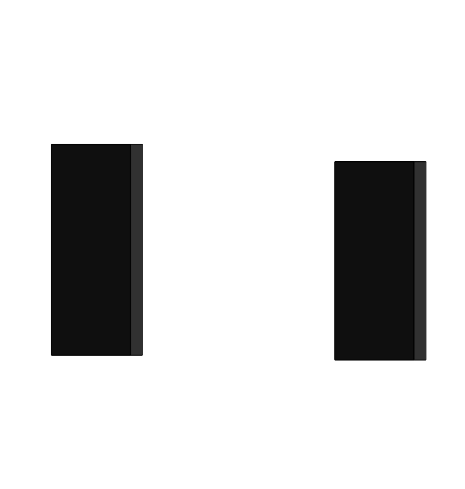

Early-stage concept
A strong idea exists, but the operating model, commercial logic and route to market still need to be built.
Multiple realities.
Multiple realities are read
as one connected business system.
Experience moves between emerging concepts and established organizations, across brand-led, hospitality, cultural and commercial environments.
My role is to connect those layers.
Engagements typically begin when vision, operations and commercial reality have outgrown the structure holding them together.
Workshops & Guest Lectures.
Open to international leadership roles, operating mandates, selected strategic work, workshops and guest lectures.
This is often where I enter: when growth, execution or commercial performance begin to outpace the structure holding the business together.
Different contexts.
Same operating intelligence.
Creative fluency, commercial discipline and operating depth across very different business environments.
Breadth without fragmentation.
Culture / industrial transformation
Chief Operating Officer
Led its strategic and operational transformation into a cultural and commercial platform.
A complex concept turned into a functioning business.
Luxury / international corporate group
European and Eastern European Sales Manager
Market expansion, distribution and client and partner relationships across the region.
Fashion / international designer business
Commercial Operations & Business Development
Showroom strategy, market expansion and international client relationships.
The commercial structure behind international growth.
Media / editorial
Advertising Director
Advertising revenue, brand partnerships and international client relationships, built inside an editorial context.
Selected mandates & environments
Selected outcome ranges across mandates.
Commercial thinking is built into the operating work, not added to it.
LDT INC
The Marketing AtelierA consulting structure within LDT INC
Since 2012, LDT INC has been my independent practice for operating, transformation and commercial mandates.
I work directly with founders, owners and leadership teams, from understanding what is not working through to building the structure and execution required to move the business forward.
I work inside creative complexity without removing the creativity from it.
I know how to work with artists, musicians, designers, performers and editorial teams without forcing creative work into a corporate template. My role is to build enough structure around the idea for it to move, perform and grow.
Selected professional contexts.
I understand the creative idea, the business behind it and the operating system that makes it work.
Across markets, stages and ownership structures.
Engagements typically begin when vision, operations and commercial reality have outgrown the structure holding them together.
A strong idea exists, but the operating model, commercial logic and route to market still need to be built.
The business is running, but brand, operations, commercial priorities and decision structures are no longer working together cleanly.
Growth has created complexity across markets, teams, partners or revenue structures and the organisation needs a system that can hold it together.
I take responsibility inside the business.
Senior leadership / strategic operating responsibility.
An offer is only as strong as the business built to keep it.
Not what the business says.What it can actually sell, deliver and sustain.
What it sells.
OfferWhat it says it is.
What it can deliver.
OrganisationWhat it actually delivers.
What its economics can sustain.
EconomicsWhat price, cost and margin allow.
Aligned
When the offer, the organisation and the economics line up, the proposition holds.
Drift starts when they stop lining up.
Aligned
It holds
Drifted
01
The offer keeps growing: more products, formats and revenue lines around one idea.
Not all of them make it stronger, and the organisation and the margin have to carry every one.
The question I askWhich of these carry the business, and which only complicate it?
02
The offer promises more than the organisation can deliver on an ordinary day.
It works when the best people push it through, not as a routine.
The question I askCould this be delivered on an ordinary Tuesday, without heroics?
03
The business has grown into new markets, customers and formats.
Growth is not the problem.
Losing what made the business strong is.
The question I askWhat is the business at its core, and does growth still serve it?
04
Customers want it and the team can deliver it.
But price, cost and margin do not add up, so the business pays for its own success.
The question I askWhat would have to change for this offer to carry itself?
05
Sales promises one version, operations delivers a second, leadership plans for a third.
Each part works hard, but not on the same business.
The question I askWould everyone in the business describe the same offer?
The work is rarely to find a new idea. It is to protect a strong one from the business that has grown around it.
01
03
The trade-offs are leadership decisions.
I make them clear, then build the operating conditions that make them hold.
MaHalla
Schloss Elmau / Orania BerlinBrand, operating and commercial concepts in hospitality
ReebokLicensing, designer collaboration and product partnership
When the offer and the business behind it stop matching, the trade-offs become unavoidable.
A difference only becomes an advantage when it changes the choice.
Much of what gets noticed never enters the decision.
A difference has to register before it can matter.
If customers simply expect it, the difference belongs to the baseline.
Would customers notice if it disappeared?
It changes what people choose, pay or wait for.
Customers notice the difference. The decision stays the same.
Would they pay, wait, return or switch because of it?
The advantage has to survive contact with the operation.
The advantage has to hold in everyday delivery.
Does the way the business works strengthen it, or slowly erase it?
Copying one visible part is not enough.
When the surface can be copied without deeper change, the advantage is exposed.
Could a competitor copy it without changing how their business works?
Growth is often where the mistake shows. What scales most easily is not always what made the business worth choosing in the first place.
I follow the reason for choice into the operation: people, routines, suppliers, pricing and margin.
That is where advantage is strengthened, diluted or quietly traded away.
The reason for choice
Advantage rarely sits in one part of the business.
Product / Go-to-market
SIGHA
Product introduction across identity, website, physical POS and team alignment.
Collaboration / Licensing
Viacom / MTV / SpongeBob / TLC
Brand collaboration and licensing across multiple partners.
Commercial channel / Execution
R13 / Studio Pezzetta
Direct DACH wholesale sales and commercial execution.
Every business believes it knows why it is chosen. Few have tested it.
Where a business sits changes how everything else is read.
Context sets the comparison, and the comparison sets the expectation.
One hotel. Who is looking?
Once expectations shift, pricing, channels and experience have to make sense together.
Scenario A premium ambition, six decisions
Intended
Produced
Each decision made sense on its own. Together, they built a different business.
Brand intent meets its test in the price list, the account list and the order book.
Inside strongly positioned international houses
Rick Owens / Chloé / Nina Ricci (Puig Group)
MaHallaChief Operating Officer of a 9,000 sqm cultural and commercial venue
Worked on directly
Growth changes the conditions a business has to work under.
01
What works at one scale is often protected by conditions that do not travel.
02
Distance and volume reveal what the business was quietly relying on: one person, one account, one distributor.
03
Growth arrives as orders. The whole chain has to carry it.
Retailers, distributors, department stores and key accounts
A promising market only matters if the business can actually reach it.
The distance to a customer is rarely measured in kilometres.
Neighbouring countries can behave very differently. Distant ones can share more than the map suggests.
01Rules 02Channels 03Delivery 04Price 05Competition 06Local codes 07Trust
Which doors carry the brand, at which price, next to which names.
Accounts are opened through relationships and kept through service and terms.
Location economics, licences and the operating model are settled before the first guest arrives.
Audiences, permits and local partners shape what a programme can be.
The customer, as the business sees it
Commitment can deepen as the evidence does.
Quick to open, light on capital, and the customer arrives as someone else’s order.
The buyer chooses what reaches the floor, how it is shown and when it is marked down.
Its own staff and its own space, under someone else’s roof and terms.
Every customer is visible. So is every cost.
A few conditions decide the rest. They are rarely the same twice.
Retailers, distributors, department stores and key accounts, with their terms, pricing, orders and revenue plans. Pricing architecture across European markets with senior management. Own-store and concession formats in international retail.
LDT INC works across Europe, the Middle East and Asia.
The business in motion.
This is where I operate.
Nothing has to be broken for this to matter. A healthy, profitable business still has to work again every morning.
Strong functions do not make a strong operation. The problem usually lives between them.
The same signal can be a risk or an opportunity. What matters is who sees it, and how early.
Promises made in the market
They know which kind it is.
JudgementOnce, where it changes the outcome.
CompensationEvery week, because the system does not.
Recurring manual work often reveals where the operation is compensating for itself.
Eighteen people are not eighteen hundred. Founder-led is not corporate. An agency is not a venue.
Everything depends on the few people who know how it works.
Enough structure to carry the business well, and room for it to move.
The structure starts carrying itself instead of the business.
Protect what works. Quality, trust, knowledge, speed, culture, commercial strength.
Change what needs to shift. Capacity, pricing, workflow, supply, responsibilities, systems, structure.
The structure has to hold, whoever or whatever does the work.
Three very different operating realities. In each, the work was to make it work in practice.
Running it
Venue hire, own productions, ticketing, partners and catering, with safety, permits and authorities overseen at COO level.
Chief Operating Officer, with P&L responsibility.9,000 sqm
Many formats, one building, one operation.
Moving it
Retailers, distributors, department stores and key accounts. Pricing, forecasts and budgets, production and delivery timelines, and the sales teams that carried them.
An order is a promise that has to travel.
Making it operational
A product introduction from concept to implementation, on site.
Until the team can carry it, it is still an idea.
People carry the operation.
In most businesses, a few carry far more than their role says.
A role can be filled while the work keeps coming back.
The roleWhere the work comes back
What they need to carry it
The question is not who has the role. It is whether they can carry the outcome.
Culture becomes visible when the work gets difficult.
Who speaks, and who stays silent. Who shares what they know. Who takes it on. Who asks for help. Who protects their territory. Who escalates too early, and who too late.
Informal knowledge is often the strength. The question is whether it can outlive the person who holds it.
Who knows
Roles will keep changing. What people understand should not stay behind.
A team can grow and become slower. A small team can carry a lot.
What decides it
Skills, load, context, where knowledge sits, coordination, adaptability, and how much depends on one person.
An illustration, not a benchmark.
There is no single right team. The right architecture depends on the business it has to carry.
Inside the businessFreelancers, artists, partners
Much of the business runs through one person. Often that is exactly its strength.
Client knowledge, quality and capacity sit with a few, and so does the risk.
Deep knowledge built over years, close to the family. A strength, and a concentration.
The expertise is there. It stays inside its function.
Staff, freelancers, artists, suppliers and partners work as one unit, for a night or a season.
The team is spread across places and time zones. Context has to travel further.
Leading
Sales and commercial teams, including assistants, led day to day: performance, coordination, training.
Aligning
Sales, creative and production teams deciding together which styles to push and which to reduce.
Promoters, booking agents, artists, orchestras, choirs, cultural institutions and catering partners, working as one operation.
Enabling
Team briefings and stakeholder coordination, so a new product could be carried by the people on site.
Sales and product training.
More capable,
not more complicated.
I look at technology through the work it should carry.
What I ask
Is the technology reducing complexity, or relocating it?
One order, three ways of running it
Manual
8human touches
Added friction
13human touches, 5 of them created by the tools relocated
System-carried
3human touches remain, 5 carried by the system reduced
When it worksFewer manual touches, less reconciling between copies, faster answers, exceptions in view. Attention goes back to judgement and relationships.
Stays with a person
Moves into a system
I keep judgement visible and move stable repetition into systems.
Every tool has a role. None of them has the last word.
Lenadecides.Owner · final authority
One page of this website, from brief to record
This website was built under my direction: from concept and information architecture to design direction, production and QA. You are reading the result.
Order 1847Property: delivery date
Several tools can do different jobs. Every important state has one owner, and every automated step can be traced and recovered.
Founder-led
Tool load
Technology should remove administration, not add another thing to manage.
Agency, professional services
Scattered client state
Client and project knowledge must not scatter across tools.
Family business, Mittelstand
Tacit knowledge
Make it easier to reach without stripping away the relationships behind it.
Corporate
Duplicate ownership
Often fragmentation, not a lack of tools.
Retail, hospitality, venues
Live operations
Technology sits inside the operating day.
International
Distributed information
Information has to travel intact.
In international fashion wholesale I worked directly in JOOR and LE NEW BLACK: digital line sheets, product and SKU data, pricing, orders and account information, linked through to stock, production, logistics and delivery.
AI is the current form of this work, not its beginning.
They give the operation its direction.
A business can be busy, capable and fully in motion, and still have no direction.
The first thing I askWhat actually needs deciding?
Teams can debate an issue for weeks before anyone names the decision. Roles, input and authority only make sense once the question has a boundary.
The decision
What wholesale price do we set for next season?
How far does this decision actually need to travel?
Not everything belongs at the top. Delegation without boundaries is not the answer either. When every decision lands back with the owner, the owner becomes the bottleneck.
The pricing decision, six perspectives
Whose input can actually change the answer?
Contribution is not a veto, and consultation is not authority. More voices do not automatically make a better decision; useful input has to converge.
What would justify escalation?
A decision can be informed, challenged and shaped by many people, and still end clearly. Once it is closed, it should not be quietly reopened without new information or a clear reason.
A decision should change what happens next.
As COO of MaHalla, a 9,000 sqm cultural and commercial venue, I held P&L responsibility.
COO commercial remit
PricingContractsCommercial termsTicketing platformSettlement
Negotiations, utilisation and the economic decisions behind the P&L.
Specialist knowledge first
SafetyFire safetySecurity
Senior oversight, with specialist and architectural input.
Approval from outside
Permits
Coordinated with the authorities.
The same judgement in international wholesalePricing · Forecasts · Budgets · Product · Production · Logistics · Delivery
Judgement was never about deciding everything myself. It was knowing where each decision belonged.
A promise is kept only when it arrives.
Work gets done everywhere in a business. What counts is whether the promise becomes true for the person it was made to.
What actually has to arrive?
A scenario, followed through this page
I write the promise down until every team reads it the same way. Until then, each one delivers its own version.
Confirmed or only assumed: that is the first distinction I make.
At every handover I check that the reason travels with the date.
International wholesaleOrders followed from sell‑in to the agreed delivery date.
Seen on 21 October: ten days to phase, reduce or re‑agree.
Seen on 31 October: customers find out first.
Who owns the exception? One name, and early.
I would rather change a promise openly. Quiet change still gets paid for, later and by someone else.
Before I change anything, I ask what kind of promise it is.
I don’t ask whether it’s done. I ask whether it arrived.
Product introduction, Austria
IdentityWebsitePoint of saleTeam briefed
I worked on site, from concept to implementation.
I keep what held, confirm earlier what was assumed, and write both into the next commitment.
What should change before we do this again?
The same offer can make a strong business or a weak one.
I start with the offer. Then I read everything decided around it.
Each decision had its moment and its reason. Today, all of them apply together.
My first question is not who got it wrong, but where the original idea changed.
I look at what decisions do to each other, not only at each one on its own.
Exclusive partner
A partner gets the region to itself, so that it invests there.
Direct sales
Later, the business sells there itself, to be closer to its customers.
Agreed scope
The contract fixes what is delivered, and at what price.
Extra requests
Each extra is accepted, to keep the customer happy.
A drawing of one region. The exclusive partner holds the region, a solid white plate that covers it. Direct sales slide into the same region and ride up onto the partner's plate; where they overlap, the ground is hatched. Both now sell to the same customers, and the partner loses its reason to invest.
A drawing of one contract. The agreed scope is a solid white plate with a firm edge. Extra requests land on it one by one and pile up into a tower that leans out over the edge of what was agreed. The price stays the same, while more and more is delivered.
Both now sell to the same customers, and the partner loses its reason to invest.
The price stays the same, while more and more is delivered.
So I trace it back, to the decision that set it in motion.
One account drawn as a tall solid column: what it brings in, its full volume as the sales figures show it.
Read together with everything agreed around the price, the tall column stays only as an outline, the volume it appears to have. What stays solid is much lower: what it keeps, what that volume is worth once everything agreed is read together.
Before I judge an account by what it brings in, I read everything agreed around the price.
The same reading in real work: pricing and terms with retailers, distributors and key accounts in international wholesale; pricing, contracts and settlement as COO, with P&L responsibility.
This year’s revenue
A total can look like the answer.
Before I trust it, I want to know what it’s built on.
What changed is a fact.
Why it changed is still a question.
Is a new offer landing with new customers?
Did a few large orders arrive early?
Are existing customers buying less, or elsewhere?
The reflex
Grow it.
So I ask what it actually justifies.
The signalNew business
In practice · International fashion wholesale
I read sell-in and reorders against forecast, budget and last year, and worked with the creative and production teams to decide which styles to intensify and which to reduce.
This year's revenue as words stacked on each other. Major account, repeat business and seasonal sales form the base. New business sits on top as added weight. A height scale beside it marks this year at the top, last year below it, and the base alone, without new business, lower still.
New business is taken away. Without it, the year falls to the level of the base alone, below last year.
I read a win twice:
for what it adds,
and for what happens without it.
What can we plan around?
What is earned, and what is confirmed.
What should we build on?
New business, arriving in bursts and growing.
Where does dependency grow?
The major account behind confirmed revenue, and the growing role of new business.
A revenue number tells me what happened. Read in context, it shows what deserves attention next.
One word.
Very different relationships.
Who is actually here?
What matters here?
A request goes out.
The reply comes later.
The customer used to start
the conversation. Now that
has stopped.
I would not call this lost interest yet.
When the business reaches out,
the customer still responds.
Lena
I want to see what changed
before I decide what
it means.
A missed request alone
tells us very little.
What matters is what came
before, what followed, and
whether the old rhythm
returned.
The history shows the change. Next, I look at what else changed
at the same time.
Lena
I follow the contradiction
before I open the whole record.
01
The usual contact
has moved on.
02
The last request
sat unanswered
too long.
Still interested.Nobody left to ask.
I would
call.
The next request goes out.

Independent
contribution
Business A brings unique capabilities, assets, people or markets.
Independent
contribution
Business B brings different capabilities, assets, people or markets.
Interdependence
New
possibility
Two independent businesses
contribute something material.
Capability gap
Determine what you need
Route
+ Need
Partnership is one strategic route among several.
Define the capability gap first, then choose the route.
Strategic routes
Key needs
Build
Develop in-house
Buy
Acquire a business
Hire
Add talent
Transact
Commercial deal
Partner
Share and create together
Stay independent
Keep full control
Capability
Skills or expertise
Access
Customers or markets
IP
Technology or data
Distribution
Reach or channels
Credibility
Trust or brand
Capital
Funding or resources
Other
Other specific need
The relationship
creates a possibility
neither holds alone.
Why this partner?
Our contribution
Their contribution
Capabilities
Technology
Market position
People
Capital
Markets
Distribution
Customers
Regulatory expertise
Local know-how
Different contributions.
One workable value exchange.
Together
Joint
value
A combination
neither had alone.
Value
meets
CONSTRAINT.
Access
Dependency
Speed
Control
Reach
Margin
Exclusivity
Optionality
Partnership value comes with trade-offs.
What did we gain, what did we give up,
and what became harder to change?
Operating reality
A contract is not
An operatingmodel.
Operating reality
01
Roles & ownership
Clear responsibilities on both sides.
02
Decision rights
Who decides what, and how.
03
Governance
Structure and oversight.
04
Cadence
Operating rhythm and communication.
05
Escalation
Path for issue resolution.
06
Performance & accountability
Metrics, QBR and partner management.
Roles, decision rights, governance, cadence, escalation and performance management make the relationship operable.
Pressure reveals the truth.
Uneven contribution
Stalled decisions
Scope creep
Key-person risk
Escalation failure
Dependency shift
Pressure signals
Partnerships are tested in reality. Pressure shows what’s really there.
Lena intervention
I read the pattern, then change
the operating condition behind it.
Lena intervention
Changes the operating conditions
RescopingGovernance resetRights adjustment
Responsibility resetCadence / resource changeBoundary definition
Are we
Still
choosing this relationship
because it works?
A partnership can be deepened,
expanded, reset, narrowed,
paused or ended.
Continuing is not automatically success.
Ending is not automatically failure.
Deepen
Strengthen the relationship.
Expand
Grow the scope.
Reset
Rebuild the operating model.
Narrow
Focus on a smaller scope.
Pause
Hold and reassess.
End
Close in a managed way.
Interdependence
Independent
contribution
Business A brings unique capabilities, assets, people or markets.
Independent
contribution
Business B brings different capabilities, assets, people or markets.
New
possibility
Two independent businesses
contribute something material.
The relationship
creates a possibility
neither holds alone.
Route
+ Need
Partnership is one strategic route among several.
Define the capability gap first, then choose the route.
Strategic routes
Capability gap
Determine what you need
Key needs
Our contribution
Their contribution
Different contributions.
One workable value exchange.
Joint
value
A combination
neither had alone.
Value
meets
Partnership value comes with trade-offs.
What did we gain, what did we give up,
and what became harder to change?
Operating reality
A contract is not
Operating reality
Roles, decision rights, governance, cadence, escalation and performance management make the relationship operable.
Partnerships are tested in reality. Pressure shows what’s really there.
Pressure signals
Uneven contribution
Stalled decisions
Scope creep
Key-person risk
Escalation failure
Dependency shift
Lena intervention
I read the pattern, then change the operating condition behind it.
Changes the operating conditions
Are we
Still
choosing this relationship
because it works?
A partnership can be deepened,
expanded, reset, narrowed,
paused or ended.
Continuing is not automatically success.
Ending is not automatically failure.